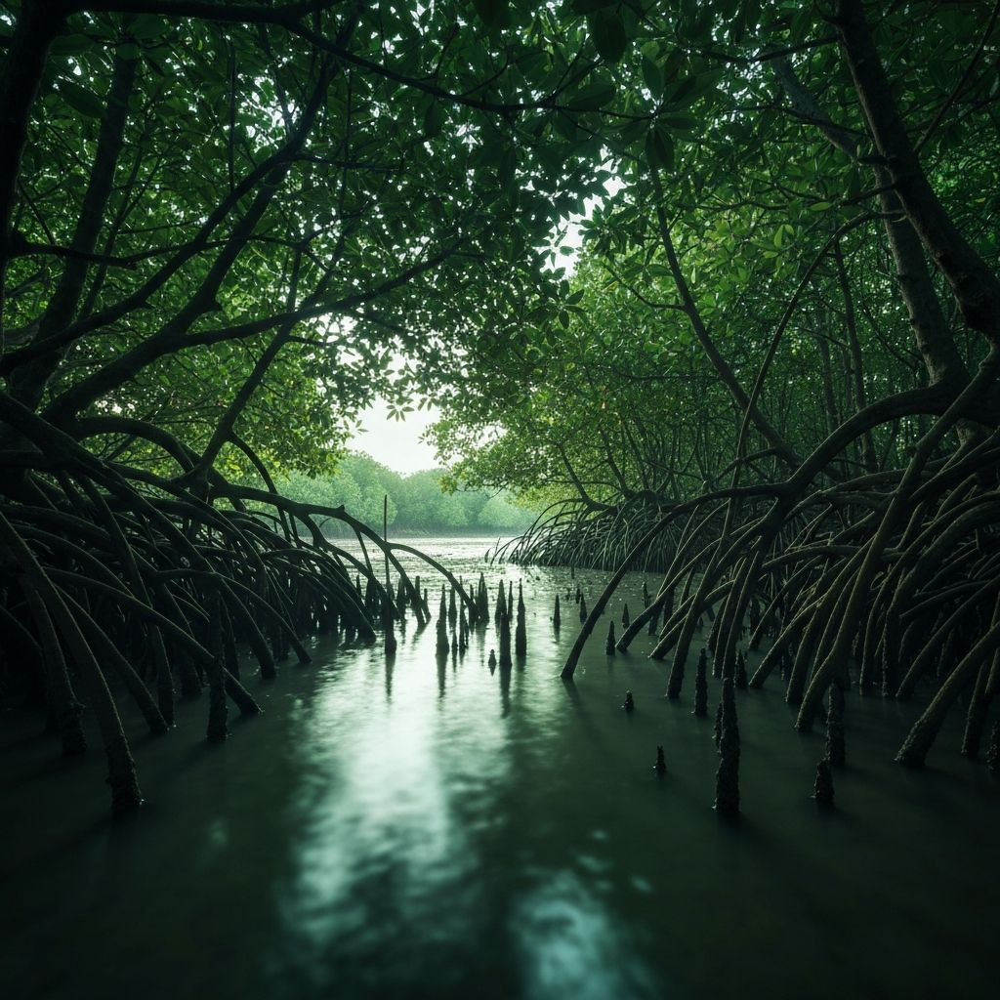
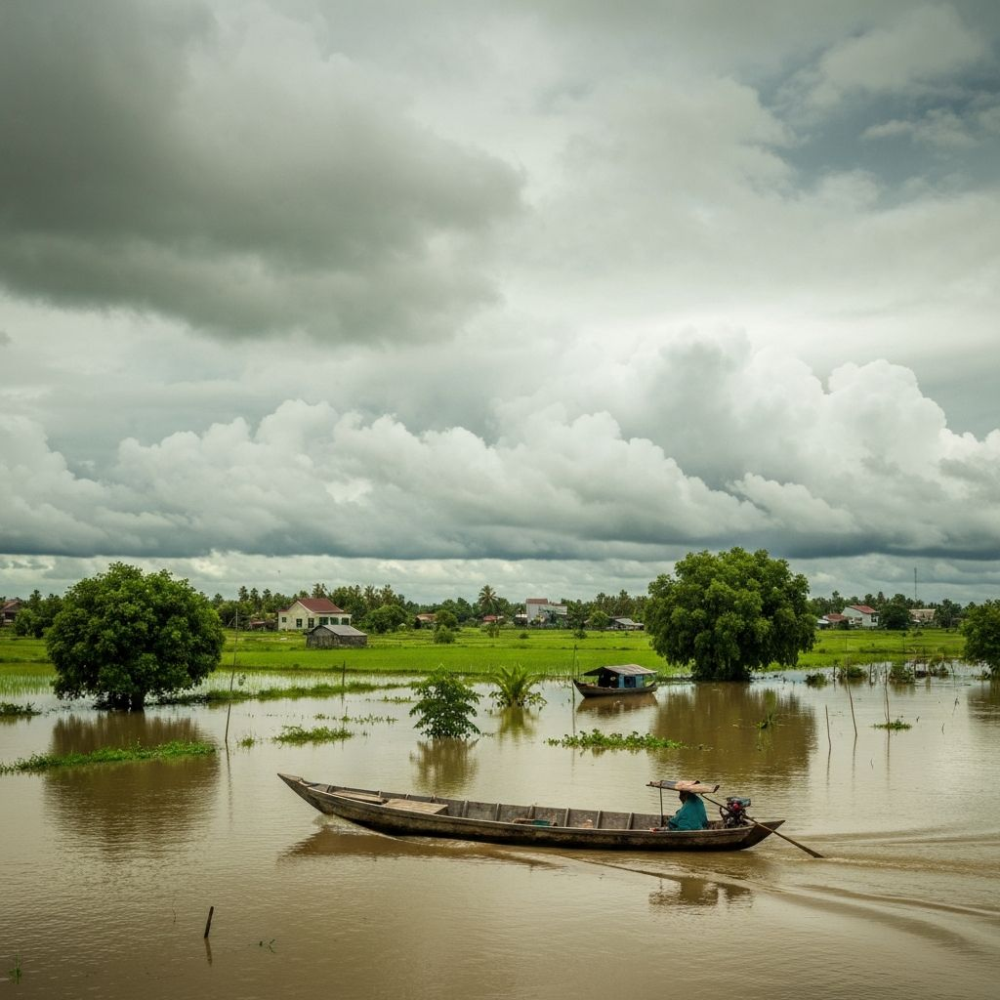

Không phải ngẫu nhiên mà người miền Tây gọi đất là “đất bồi”. Bởi vùng đất này, về bản chất, là một thực thể đang được tạo ra và cũng đang biến mất theo thời gian.
Cách đây khoảng 8.000 năm, nơi ngày nay là đồng bằng sông Cửu Long vẫn còn là một vùng ven biển, trải dài từ Hà Tiên đến vùng Đông Nam Bộ. Khi ấy, biển còn lấn sâu vào đất liền, những dòng sông mang phù sa từ thượng nguồn đổ về chỉ mới bắt đầu đặt những viên gạch đầu tiên cho một châu thổ tương lai.
Rồi băng tan, mực nước biển dâng lên nhanh chóng. Trong hàng nghìn năm, nước biển phủ lên những vùng trũng, mang theo trầm tích, vỏ sò, xác sinh vật biển lắng xuống từng lớp. Những lớp trầm tích ấy, đến nay, vẫn còn được tìm thấy trong lòng đất như những dấu vết của một thời kỳ mà nơi đây còn là đáy biển.
Khoảng hơn 5.000 năm trước, khi mực nước biển bắt đầu rút xuống, đất dần lộ ra. Nhưng đó không phải là những cánh đồng màu mỡ ngay lập tức, mà là những vùng đầm lầy ngập mặn chỉ có những loài cây chịu mặn như đước, mắm có thể sinh trưởng.
Chính những cánh rừng ngập mặn ấy đã giữ lại phù sa, làm chậm dòng chảy, tích tụ vật chất hữu cơ. Qua hàng nghìn năm, lớp lớp phù sa chồng lên nhau, tạo thành những tầng đất dày chứa cả sự sống và cả những nguy cơ tiềm ẩn như nhiễm phèn, nhiễm mặn.
Ở những nơi cao hơn, dọc theo các con sông lớn, phù sa bồi đắp thành những dải đất màu mỡ, nơi người dân trồng lúa, trồng cây ăn trái. Nhưng ở những vùng trũng thấp như Đồng Tháp Mười hay Tứ giác Long Xuyên, nước đọng lại, tạo thành những vùng đất phèn rộng lớn. Xa hơn về phía biển, nước mặn xâm nhập, biến đất thành môi trường chỉ phù hợp với nuôi trồng thủy sản.

Một vùng đất chứa nhiều số phận
Nếu nhìn từ trên cao, đồng bằng sông Cửu Long giống như một thực thể sống. Những con sông là mạch máu, mang phù sa nuôi dưỡng đất đai. Những cánh rừng ngập mặn là lớp da, bảo vệ vùng đất trước sóng gió. Và những cánh đồng là nơi tích tụ sự sống.
Nhưng cơ thể ấy chưa bao giờ ổn định.Quan sát địa chất
Mỗi lần mực nước biển thay đổi, mỗi lần dòng chảy biến động, đồng bằng lại dịch chuyển.
Những đường bờ biển mới hình thành, những dải cồn cát xuất hiện rồi biến mất. Đất được sinh ra, nhưng cũng có thể bị cuốn trôi.


Trong suốt hàng nghìn năm, quá trình ấy diễn ra chậm rãi, đủ để con người thích nghi. Người dân miền Tây học cách “thuận thiên” - sống cùng nước, trồng lúa theo mùa lũ, nuôi cá theo con nước.
Nhưng ngày nay, khi biến đổi khí hậu và tác động của con người làm thay đổi tốc độ của những quá trình tự nhiên, đồng bằng không còn kịp thích nghi nữa. Nước biển dâng nhanh hơn. Phù sa về ít hơn. Đất không còn được bồi đắp như trước, trong khi xói lở ngày càng mạnh.
Nước biển dâng nhanh hơn. Phù sa về ít hơn. Đất không còn được bồi đắp như trước, trong khi vấn đế xói lở đang diễn ra ngày càng phức tạp.
châu thổ
phù sa, phèn, mặn
để đánh mất tất cả
Những gì từng mất hàng nghìn năm để hình thành, giờ đây có thể biến mất chỉ trong vài thập kỷ.
Đất, thứ từng là nền tảng của sự sống, lại đang trở thành một yếu tố bất định. Và khi đất không còn ổn định, sinh kế của con người cũng trở nên bấp bênh. Đó là điểm giao nhau giữa lịch sử địa chất và số phận con người.
Bởi chính mảnh đất ấy cũng đang thay đổi từng ngày. Một thửa ruộng hôm nay có thể là đất lúa. Vài năm sau, nó trở thành ao tôm. Và một ngày nào đó, nó có thể bị nước mặn nuốt chửng.
Trong bối cảnh đó, câu hỏi không còn là “ai sở hữu đất”, mà chuyển sang: liệu đất còn có thể nuôi sống con người hay không.